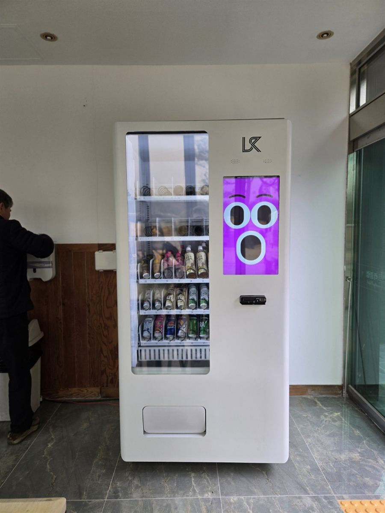

캠핑장은 해가 진 뒤에 음료를 찾는 사람이 가장 많은 곳입니다. 고기를 굽다 물이 떨어지고, 아이들은 밤늦게 탄산음료를 찾습니다. 그런데 관리동 매점은 저녁이면 문을 닫고, 외곽에 있는 캠핑장은 가까운 편의점까지 차로 나가야 하는 경우가 많습니다. 관리동 입구에 자판기 한 대가 있으면 관리자가 자리를 비운 시간에도 판매가 이어집니다.
이번 자리는 유리 출입문 바로 옆, 지붕이 있는 실내 벽면이었습니다. 캠핑장에서 먼저 보는 건 비와 직사광선을 피할 수 있는지, 전용 콘센트가 가까운지, 바닥이 평평한지입니다. 냉장 자판기는 밖에 두면 여름에는 냉각이 힘들고 겨울에는 결로가 생기기 쉬워, 되도록 처마 안쪽이나 실내에 둡니다. 개수대나 화장실 앞처럼 바닥이 젖는 자리는 피합니다.
화성 캠핑장에 맞는 구성
캠핑장은 음료를 넉넉하게 잡습니다. 생수와 탄산음료, 이온음료를 가장 많은 칸에 넣고, 캔커피와 차 음료를 곁들입니다. 아이 동반 가족이 많으면 주스와 과자 몇 칸을 더하고, 아침 시간을 생각해 커피 칸을 넉넉히 둡니다. 품목은 운영자와 협의해 정하는 게 원칙이며, 매점에서 이미 파는 상품과 겹치지 않게 나누는 방법도 있습니다.
결제는 신용·체크카드와 삼성페이·카카오페이·네이버페이를 받습니다. 캠핑객은 현금을 잘 챙기지 않아 카드 결제가 사실상 필수입니다. 칸별 재고와 매출은 휴대폰 앱으로 보기 때문에, 금요일 입실 전에 빈 칸만 골라 채우면 됩니다.
캠핑장에 놓을 때 좋은 점과 어려운 점
좋은 점은 매점 운영 시간이 끝난 밤과 이른 아침에도 판매가 된다는 것입니다. 관리자가 매번 매점을 열어 두지 않아도 되니 인력 부담이 줄고, 손님은 차를 끌고 나가지 않아도 됩니다.
어려운 점도 분명합니다. 주말과 여름 성수기에 매출이 몰리고, 비수기 평일에는 거의 팔리지 않는 날도 있습니다. 성수기 주말에는 음료가 한꺼번에 빠져 중간 보충이 필요할 수 있습니다. 외곽이라 재고를 채우러 가는 길이 멀다는 점도 미리 계산해 두셔야 합니다.
화성 무인매장, 이런 자리가 잘 됩니다
화성은 동쪽과 서쪽의 성격이 크게 다릅니다. 서쪽 서신면의 궁평항·전곡항과 제부도 일대는 주말 나들이객이 많아 캠핑장·펜션·낚시터 같은 여가시설 자리가 맞습니다. 송산면과 새솔동이 있는 송산그린시티 쪽은 새 아파트 단지 상가가 늘고 있습니다.
동쪽 동탄신도시는 아파트 단지 상가와 학원가, 동탄테크노밸리 사무동이 모여 있어 스터디카페·사무실 휴게실 수요가 꾸준합니다. 기아 화성공장이 있는 우정읍과 향남제약단지·발안산업단지가 있는 향남읍·팔탄면은 공장 휴게실 자리가 많고, 수원대·협성대가 있는 봉담읍은 원룸촌과 대학가 무인매장 문의가 있습니다.
화성 서비스 지역
동 지역 — 동탄 · 반월동 · 능동 · 석우동 · 청계동 · 영천동 · 오산동 · 병점동 · 진안동 · 기산동 · 화산동 · 새솔동
읍 지역 — 봉담읍 · 향남읍 · 남양읍 · 우정읍
면 지역 — 서신면 · 송산면 · 마도면 · 비봉면 · 매송면 · 팔탄면 · 장안면 · 정남면 · 양감면
인접한 수원 · 오산 · 용인 · 평택 · 안산 · 의왕까지 같은 조건으로 나갑니다.
화성 무인창업, 이렇게 시작하시면 됩니다
설치비는 받지 않습니다. 자리 확인부터 품목 구성, 기계 반입, 카드 결제 연동, 재고 채우는 방법까지 한 번에 안내해 드립니다. 캠핑장처럼 외곽이라 진입로가 좁거나 비포장인 곳은 반입 차량과 경로를 미리 확인하고 날짜를 잡습니다.
비용은 구입이 렌탈보다 유리한 편입니다. 렌탈료를 몇 년 내는 것보다 처음에 사 두는 쪽이 총액이 낮게 나오는 경우가 많습니다. 구성별 36개월 총비용은 구입 vs 렌탈 비교 가이드에 정리해 두었습니다.
화성 무인자판기 설치 상담
관리동이나 매점 앞 사진 한 장만 보내 주셔도 됩니다. 콘센트 위치와 지붕 유무를 보고 어떤 크기가 맞을지 먼저 봐 드린 뒤 견적을 보내 드립니다.
※ 사진은 픽포스가 시공한 설치 사례이며, 글에 적힌 지역의 현장 사진은 아닙니다. 자판기 구성과 품목은 자리와 업종에 따라 달라지며, 실외나 반실외 공간은 설치 가능 여부를 현장에서 확인합니다. 정확한 금액은 견적서로 안내드립니다.